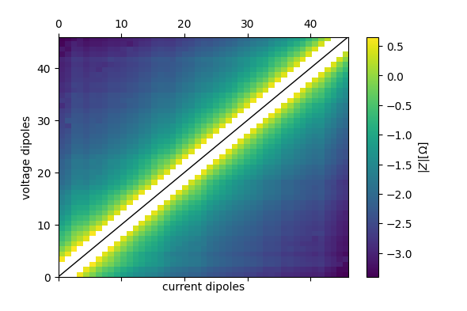
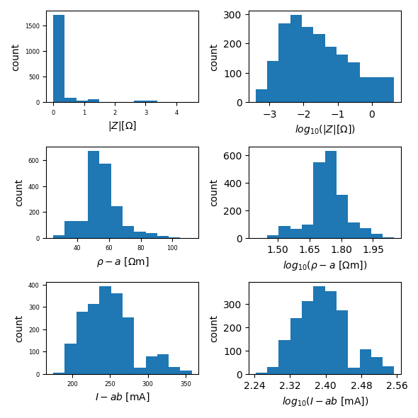

Note
Click here to download the full example code
Importing Syscal ERT data¶
This example is all about import data from IRIS Instruments Syscal systems. There is a variety of different options that should cover most use cases. Also, shortly introduced are the data journal, action log, filtering, and accessing data using the underlying dataframe.
data import:
# note that you should prefer importing the binary data as the text export
# sometimes is missing some of the auxiliary data contained in the binary data.
ert.import_syscal_txt('data_syscal_ert/data_normal.txt')
# the second data set was measured in a reciprocal configuration by switching
# the 24-electrode cables on the Syscal Pro input connectors. The parameter
# "reciprocals" changes electrode notations.
ert.import_syscal_txt(
'data_syscal_ert/data_reciprocal.txt',
reciprocals=48
)
# compute geometrical factors using the analytical half-space equation for a
# spacing of 0.25 m
ert.compute_K_analytical(spacing=0.25)
Out:
--- Data Journal Start ---
2021-06-21 10:03:48.187848
Data was imported from file (990 data points)
Data was imported from file (990 data points)
--- Data Journal End ---
Out:
2021-06-21 10:03:46,759 - reda.containers.ERT - INFO - IRIS Syscal Pro text import
2021-06-21 10:03:47,362 - reda.containers.ERT - INFO - Data sized changed from 0 to 990
2021-06-21 10:03:47,362 - reda.containers.ERT - INFO - IRIS Syscal Pro text import
2021-06-21 10:03:48,174 - reda.containers.ERT - INFO - Data sized changed from 990 to 1980
create some plots in a subdirectory
with reda.CreateEnterDirectory('plots'):
ert.pseudosection(
column='r', filename='pseudosection_log10_r.pdf', log10=True)
ert.histogram(['r', 'rho_a', 'Iab', ], filename='histograms.pdf')
- 
- 
Out:
Generating histogram plot for key: r
Generating histogram plot for key: rho_a
Generating histogram plot for key: Iab
export to various data files
with reda.CreateEnterDirectory('output_01_syscal_import'):
ert.export_bert('data.ohm')
ert.export_pygimli('data.pygimli')
ert.export_crtomo('volt.dat')
The data is internally stored in a pandas.DataFrame As such, you can always use the data directly and build your custom functionality on top of REDA
print(ert.data)
Out:
a b m n Iab ... norrec rdiff k rho_a sigma_a
0 1 2 5 4 325.250 ... nor 0.248598 18.849556 73.639666 0.013580
1 4 5 2 1 202.874 ... rec 0.248598 18.849556 68.953711 0.014502
2 1 2 6 5 325.250 ... nor 0.065825 47.123890 66.833629 0.014963
3 5 6 2 1 236.119 ... rec 0.065825 47.123890 63.731679 0.015691
89 5 6 3 2 236.119 ... rec 0.144387 18.849556 61.150591 0.016353
... .. .. .. .. ... ... ... ... ... ... ...
1973 47 48 43 42 245.897 ... rec 0.000643 94.247780 33.816547 0.029571
1976 43 44 48 47 179.834 ... nor 0.006144 47.123890 39.976982 0.025014
1977 47 48 44 43 245.897 ... rec 0.006144 47.123890 39.687461 0.025197
1978 44 45 48 47 242.947 ... nor 0.049032 18.849556 33.813317 0.029574
1979 47 48 45 44 245.897 ... rec 0.049032 18.849556 32.889082 0.030405
[1980 rows x 13 columns]
Lets apply an arbitrary filter. Note that the change in data numbers is logged. You can use all columns defined in the data frame for more complex filters
ert.filter('r <= 0')
ert.filter('(a == 1) and Iab <= 100')
ert.print_data_journal()
Out:
--- Data Journal Start ---
2021-06-21 10:03:49.451718
Data was imported from file (990 data points)
Data was imported from file (990 data points)
A filter was applied with query "r <= 0". In total 0 records were removed
A filter was applied with query "(a == 1) and Iab <= 100". In total 0 records were removed
--- Data Journal End ---
Also note that normal-reciprocal differences were directly computed.
fig, ax = plt.subplots()
ax.scatter(
ert.data['r'],
np.abs(ert.data['rdiff']),
)
ax.set_xlabel(r'$R [\Omega$]')
ax.set_ylabel(r'$\Delta R_{NR}~[\Omega$]')
ax.grid()
ax.set_xscale('log')
ax.set_yscale('log')
The column ‘id’ groups quadrupoles belonging to the same normal-reciprocal pair. For example, plot some of the groups
Out:
Id: 170
a b m n r rho_a k Iab
0 1 2 5 4 3.906706 73.639666 18.849556 325.250
1 4 5 2 1 3.658108 68.953711 18.849556 202.874
Id: 211
a b m n r rho_a k Iab
2 1 2 6 5 1.418254 66.833629 47.12389 325.250
3 5 6 2 1 1.352428 63.731679 47.12389 236.119
Id: 212
a b m n r rho_a k Iab
89 5 6 3 2 3.244140 61.150591 18.849556 236.119
88 2 3 6 5 3.388527 63.872224 18.849556 256.492
Id: 252
a b m n r rho_a k Iab
4 1 2 7 6 0.725030 68.332465 94.24778 325.250
5 6 7 2 1 0.717153 67.590078 94.24778 207.264
Id: 253
a b m n r rho_a k Iab
91 6 7 3 2 1.442918 67.995919 47.12389 207.264
90 2 3 7 6 1.473301 69.427689 47.12389 256.492
Id: 254
a b m n r rho_a k Iab
175 6 7 4 3 4.233244 79.794762 18.849556 207.264
174 3 4 7 6 4.500319 84.829014 18.849556 239.825
There are various ways to import Syscal data, relating to the electrode numbering:
ert1 = reda.ERT()
ert1.import_syscal_bin(
'data_syscal_ert/02_data_normal_thinned_not_all_electrodes/data.bin',
check_meas_nums=False,
)
print(ert1.electrode_positions)
ert2 = reda.ERT()
ert2.import_syscal_bin(
'data_syscal_ert/02_data_normal_thinned_not_all_electrodes/data.bin',
check_meas_nums=False,
elecs_transform_reg_spacing_x=(1, 2.5),
)
print(ert2.electrode_positions)
ert3 = reda.ERT()
ert3.import_syscal_bin(
'data_syscal_ert/02_data_normal_thinned_not_all_electrodes/data.bin',
check_meas_nums=False,
assume_regular_electrodes_x=(48, 1.0),
# elecs_transform_reg_spacing_x=(1, 2.5),
)
print(ert3.electrode_positions)
ert_rec = reda.ERT()
ert_rec.import_syscal_bin(
'data_syscal_ert/02_data_normal_thinned_not_all_electrodes/data.bin',
check_meas_nums=False,
assume_regular_electrodes_x=(48, 1.0),
elecs_transform_reg_spacing_x=(1, 2.5),
reciprocals=48,
)
print(ert_rec.electrode_positions)
Out:
x y z
electrode_number
1 0.0 0.0 0.0
2 1.0 0.0 0.0
3 3.0 0.0 0.0
4 4.0 0.0 0.0
5 5.0 0.0 0.0
6 6.0 0.0 0.0
7 7.0 0.0 0.0
8 8.0 0.0 0.0
9 9.0 0.0 0.0
10 10.0 0.0 0.0
11 11.0 0.0 0.0
12 12.0 0.0 0.0
13 40.0 0.0 0.0
14 41.0 0.0 0.0
15 42.0 0.0 0.0
16 43.0 0.0 0.0
17 44.0 0.0 0.0
18 45.0 0.0 0.0
19 46.0 0.0 0.0
20 47.0 0.0 0.0
x y z
electrode_number
1 0.0 0.0 0.0
2 2.5 0.0 0.0
3 7.5 0.0 0.0
4 10.0 0.0 0.0
5 12.5 0.0 0.0
6 15.0 0.0 0.0
7 17.5 0.0 0.0
8 20.0 0.0 0.0
9 22.5 0.0 0.0
10 25.0 0.0 0.0
11 27.5 0.0 0.0
12 30.0 0.0 0.0
13 100.0 0.0 0.0
14 102.5 0.0 0.0
15 105.0 0.0 0.0
16 107.5 0.0 0.0
17 110.0 0.0 0.0
18 112.5 0.0 0.0
19 115.0 0.0 0.0
20 117.5 0.0 0.0
x y z
electrode_number
1 0.0 0.0 0.0
2 1.0 0.0 0.0
3 2.0 0.0 0.0
4 3.0 0.0 0.0
5 4.0 0.0 0.0
6 5.0 0.0 0.0
7 6.0 0.0 0.0
8 7.0 0.0 0.0
9 8.0 0.0 0.0
10 9.0 0.0 0.0
11 10.0 0.0 0.0
12 11.0 0.0 0.0
13 12.0 0.0 0.0
14 13.0 0.0 0.0
15 14.0 0.0 0.0
16 15.0 0.0 0.0
17 16.0 0.0 0.0
18 17.0 0.0 0.0
19 18.0 0.0 0.0
20 19.0 0.0 0.0
21 20.0 0.0 0.0
22 21.0 0.0 0.0
23 22.0 0.0 0.0
24 23.0 0.0 0.0
25 24.0 0.0 0.0
26 25.0 0.0 0.0
27 26.0 0.0 0.0
28 27.0 0.0 0.0
29 28.0 0.0 0.0
30 29.0 0.0 0.0
31 30.0 0.0 0.0
32 31.0 0.0 0.0
33 32.0 0.0 0.0
34 33.0 0.0 0.0
35 34.0 0.0 0.0
36 35.0 0.0 0.0
37 36.0 0.0 0.0
38 37.0 0.0 0.0
39 38.0 0.0 0.0
40 39.0 0.0 0.0
41 40.0 0.0 0.0
42 41.0 0.0 0.0
43 42.0 0.0 0.0
44 43.0 0.0 0.0
45 44.0 0.0 0.0
46 45.0 0.0 0.0
47 46.0 0.0 0.0
48 47.0 0.0 0.0
x y z
electrode_number
1 0.0 0.0 0.0
2 2.5 0.0 0.0
3 5.0 0.0 0.0
4 7.5 0.0 0.0
5 10.0 0.0 0.0
6 12.5 0.0 0.0
7 15.0 0.0 0.0
8 17.5 0.0 0.0
9 20.0 0.0 0.0
10 22.5 0.0 0.0
11 25.0 0.0 0.0
12 27.5 0.0 0.0
13 30.0 0.0 0.0
14 32.5 0.0 0.0
15 35.0 0.0 0.0
16 37.5 0.0 0.0
17 40.0 0.0 0.0
18 42.5 0.0 0.0
19 45.0 0.0 0.0
20 47.5 0.0 0.0
21 50.0 0.0 0.0
22 52.5 0.0 0.0
23 55.0 0.0 0.0
24 57.5 0.0 0.0
25 60.0 0.0 0.0
26 62.5 0.0 0.0
27 65.0 0.0 0.0
28 67.5 0.0 0.0
29 70.0 0.0 0.0
30 72.5 0.0 0.0
31 75.0 0.0 0.0
32 77.5 0.0 0.0
33 80.0 0.0 0.0
34 82.5 0.0 0.0
35 85.0 0.0 0.0
36 87.5 0.0 0.0
37 90.0 0.0 0.0
38 92.5 0.0 0.0
39 95.0 0.0 0.0
40 97.5 0.0 0.0
41 100.0 0.0 0.0
42 102.5 0.0 0.0
43 105.0 0.0 0.0
44 107.5 0.0 0.0
45 110.0 0.0 0.0
46 112.5 0.0 0.0
47 115.0 0.0 0.0
48 117.5 0.0 0.0